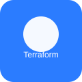

Visual Studio Code
El punto de partida: archivos claros, editables y versionables.
Despliegue completado en local
Una práctica de infraestructura como código para entender cómo una página estática viaja desde Visual Studio Code hasta Amazon S3.

01 / EL RECORRIDO
El punto de partida: archivos claros, editables y versionables.
La infraestructura se declara y se revisa con ayuda contextual.
Los archivos llegan al bucket y quedan listos para servir.
02 / LO ESENCIAL
Define recursos cloud con archivos declarativos. El estado convierte cada cambio en algo visible, repetible y controlable.
01Guarda objetos con durabilidad y escala. Un bucket puede almacenar los archivos que componen una web estática.
02Conecta modelos con herramientas y contexto real para que la IA pueda trabajar sobre el proyecto, no solo describirlo.
03